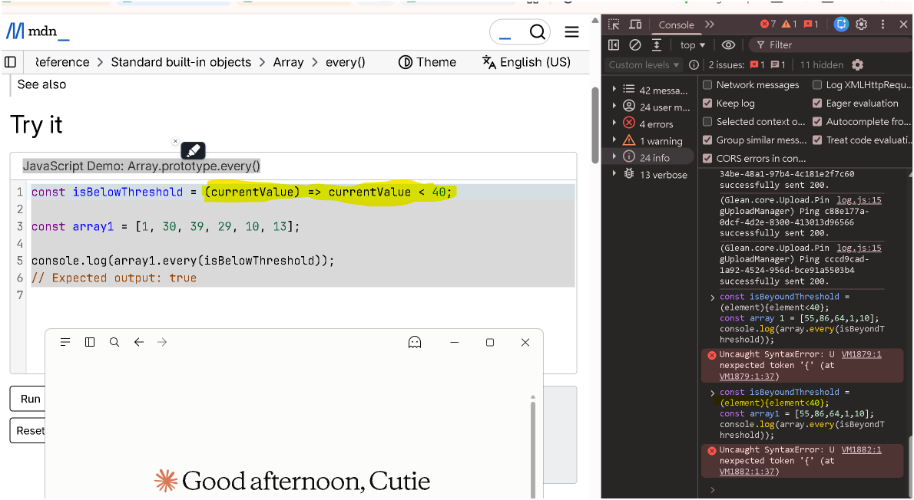

黃色色塊點一下顯示／再點一下藏起來
主軸圖：一張圖定位全篇（後續追問請指回這張圖的某個方框）
與其他筆記的關聯（附理由）
- 箭頭函式的兩組括號-參數小括弧與主體大括弧-隱式回傳：那篇把「參數的小括弧」與「主體的大括弧」拆成兩組獨立規則講到底，本篇只講到踩雷當下需要的程度。
- 09-Hoisting-函式宣告vs函式表達式-TDZ：本篇 (q) 說「宣告可以提前呼叫、表達式不行」，那篇解釋為什麼——差別不在有沒有被 hoist，而在有沒有被初始化。
- JavaScript-函式類型總整理：那篇是四條分類軸的完整比較表，本篇是其中兩條軸的實戰排查版。
- 06-every短路求值與初始長度快照-命令式重構為宣告式：這次踩雷的現場就是 MDN 的
Array.prototype.every() 範例頁，那篇講 every 本身在做什麼。
- 03-陳述式-Statement-vs-表達式-Expression：本篇 (f)(h) 整個推論的地基。
1. 先把兩條軸分開：它們互相獨立（a–d）
Abby 的原問題：「是因為寫成表達式的都一定要搭配箭頭函式嗎？」
不是。「函式表達式」講的是函式出現在哪個位置，「箭頭函式」講的是函式用哪種語法寫，兩者完全正交，可以自由組合。
↓ 黃色色塊點一下顯示答案
| 用 function 關鍵字 | 用箭頭 => |
|---|
| 宣告位置 | function f(x) { return x < 40; } | 不存在，箭頭函式只能是表達式 |
|---|
| 表達式位置 | const f = function (x) { return x < 40; }; | const f = (x) => x < 40; |
|---|
- (d) 所以「寫成
const xxx = ... 就一定要用箭頭函式」是錯的，const f = function (x) { ... } 完全合法，只是現代寫法偏好箭頭。
2. 那行 Console 到底錯在哪：Unexpected token '{'（e–j）

現場：MDN Array.prototype.every() 範例頁，Console 連丟兩次 Uncaught SyntaxError: Unexpected token '{'（螢光筆標的正是缺了箭頭的那一段）
const isBeyondThreshold = (element){element < 40}; // ❌ SyntaxError
| 改法 | 寫法 | 說明 |
|---|
| 補箭頭，用 concise body | const isBeyondThreshold = (element) => element < 40; | 最短，自動回傳 |
| 補箭頭，用 block body | const isBeyondThreshold = (element) => { return element < 40; }; | 大括號在，就得自己寫 return |
| 改成函式宣告 | function isBeyondThreshold(element) { return element < 40; } | 會被 hoist，可以提前呼叫 |
| 改成傳統函式表達式 | const isBeyondThreshold = function (element) { return element < 40; }; | 補上 function 關鍵字，引擎就知道你要哪一種 |
function isBeyondThreshold(element) { return element < 40; }
const array1 = [55, 86, 64, 1, 10];
console.log(array1.every(isBeyondThreshold)); // false
// 或直接把匿名的傳統函式當 callback 傳進去
console.log(array1.every(function (element) { return element < 40; })); // false
DevTools Console 貼多行程式碼的小技巧
(r) 在 Console 裡按 Shift + Enter 是換行，按 Enter 才是執行。寫 class 或多行函式時先把整段（包含最後那個 }）寫完再送出。
同一場對話裡 Abby 的 class Dog { ... } 報錯也是同一個病根：最外層的 } 漏掉，引擎以為 class 還沒結束，讀到下一行的 const myDog 就爆。
3. 有大括號就得自己 return：concise body vs block body（k–n）
名詞先澄清
(k) Gemini 說的「多行程式塊」指的是語法形態，不是你在編輯器裡實際敲了幾行。就算全部擠在同一行，只要有 {}，它就是 block body。
- (l) concise body ＝箭頭後面直接接一個表達式，沒有大括號，引擎自動回傳那個表達式的值。
- (m) block body ＝箭頭後面接
{}，引擎不會自動回傳，沒寫 return 就回 undefined。
- (n) ⚠️ 這個錯比 (e) 那個更陰險，因為它不報錯，只是默默給你錯的答案：
// 有大括號卻沒寫 return → 每次呼叫都回 undefined（falsy）
const isBeyondThreshold = (element) => { element < 40 };
[55, 86, 64, 1, 10].every(isBeyondThreshold); // false —— 看起來「對」，其實是誤打誤撞
// 換成應該要是 true 的資料就露餡了
[1, 2, 3].every((e) => { e < 40 }); // false ← 錯！正確答案是 true
[1, 2, 3].every((e) => e < 40); // true ← 這才對
| 形態 | 寫法 | 要自己寫 return 嗎 |
|---|
| concise body | (x) => x < 40 | 不用，自動回傳 |
| block body | (x) => { return x < 40; } | 必須寫，否則回 undefined |
| 傳統函式 | function (x) { return x < 40; } | 必須寫，否則回 undefined |
4. 傳統匿名函式的三種常見場景（o–q）
(o) 用 function 關鍵字定義的「傳統函式」完全可以是匿名的，最常出現在下面三個位置：
- 函式表達式：把沒名字的函式賦值給變數，變數名代表該函式，但函式本體本身是匿名的。
const greet = function () { console.log("Hello World"); };
greet();
- 立即執行函式（IIFE）：定義當下立刻執行，常用來建立獨立作用域、避免污染全域變數。
(function () { console.log("立刻執行，且沒有名字"); })();
- 回呼函式（Callback）：直接當參數傳給其他方法，事件監聽與非同步最常見。
setTimeout(function () { console.log("延遲 1 秒後執行"); }, 1000);
(p) 現代多用箭頭函式取代，但兩者行為關鍵不同，不只是寫法長短：
| 面向 | 傳統匿名函式 | 箭頭函式 |
|---|
this 綁定 | 動態綁定：取決於「呼叫時」的上下文 | 沒有自己的 this，繼承「定義時」外層環境（靜態） |
arguments | 內部可用 arguments 存取所有傳入參數 | 不支援 arguments |
能不能 new | 可以，是建構函式 | 不行，會丟 TypeError |
有沒有 prototype 屬性 | 有 | 沒有 |
(q) 宣告與表達式還有一個執行期差異：函式宣告在進入作用域時就連名帶身體一起就緒，可以提前呼叫；const／let 的函式表達式只建綁定不初始化，提前呼叫會撞 TDZ 丟 ReferenceError。
5. ⚠️ 存疑／更正（Gemini 講得不夠精確的地方）
| Gemini 原文 | 問題 | 補正 |
|---|
把「漏掉 =>」與「漏掉 return」並列成「兩個語法錯誤」 | 只有前者是 SyntaxError，後者根本不報錯，會靜默回傳 undefined | 兩者嚴重性完全不同：前者當場爆、後者是邏輯 bug，要分開講 |
| 「漏掉花括號內的 return，否則預設會回傳 undefined」 | 說法沒錯，但沒說清楚這跟傳統函式是同一條規則，不是箭頭函式特有 | 只要是 block body（含傳統 function），一律不自動回傳 |
| 只說「語法解析器不知道你要寫哪一種」 | 講對了方向但沒講機制 | 規格上的名詞是 cover grammar：(element) 先被暫存成兩義，等下一個 token 才定案 |
自己考自己 ① 是非題
1. 只要把函式寫在 const f = ... 的右邊，就一定得用箭頭函式。
✗ 錯。const f = function (x) { ... } 一樣是合法的函式表達式。「表達式」講位置，「箭頭」講語法，兩條軸互相獨立。
2. const greet = function () {} 裡的那個函式，本體是匿名的。
✓ 對。具名與否看的是 function 後面有沒有名字，跟變數叫 greet 無關。
3. (element){ element < 40 } 報的 Unexpected token '{'，是因為小括號寫錯了。
✗ 錯。(element) 本身完全合法，可以是括號表達式也可以是參數列。錯的是它後面接了 {，文法裡沒有任何一條允許這樣接。
4. (e) => { e < 40 } 不會報錯，但每次呼叫都回 undefined。
✓ 對。有大括號就是 block body，不自動回傳。這是比 SyntaxError 更陰險的一類 bug，因為它靜默。
5. 「Block Body」的意思是程式碼實際寫了超過一行。
✗ 錯。那是語法形態的名稱，跟實際行數無關。全部擠在同一行、只要有 {}，仍然是 block body。
6. 用 function 宣告出來的函式可以在宣告之前就呼叫，用 const 綁的函式表達式不行。
✓ 對。兩者都會被 hoist，差別在有沒有被初始化：宣告連名帶身體就緒，const 只建綁定、處於 TDZ，提前碰它丟 ReferenceError。
自己考自己 ② 申論題
Q1. 逐步說明引擎讀到 const f = (element){ element < 40 }; 時發生了什麼，為什麼錯誤訊息指的是 {？
參考答案：
① 讀到 const f =，引擎知道接下來必須是一個表達式。
② 讀到 (element)，此時它有兩種可能——括號表達式，或箭頭函式的參數列。規格用 cover grammar 把它暫存成兩義，不急著定案。
③ 讀下一個 token 來定案：若是 => 就重新解讀成參數列；這裡讀到的是 {。
④ 文法裡沒有「括號表達式後面接區塊」這條產生式，於是在 { 這個位置報 Unexpected token '{'。
所以錯誤指向 { 而非 (，因為 (element) 在讀到它的當下完全合法，是後面那個 token 讓整串接不下去。
Q2. 為什麼「漏掉 =>」跟「漏掉 return」不該被並列成同一類錯誤？各自會怎麼表現？
參考答案：
漏掉 => 是語法錯誤：程式碼連 parse 都過不了，整個 script 一行都不會執行，Console 當場丟 SyntaxError。它很吵，但也因此很好修。
漏掉 return 是邏輯錯誤：語法完全合法，函式跑得起來，只是每次都回 undefined。搭配 every／filter／find 這種吃 truthy 的 API 時，結果會靜默錯掉，甚至可能「剛好對」而騙過你。
把兩者並列會讓人以為漏 return 也會報錯，於是養成「沒報錯就是對的」的錯誤直覺。
Q3. 同一個 callback，什麼時候該用 concise body、什麼時候該用 block body？請給出判準而不是「越短越好」。
參考答案：
判準是用括號表達意圖，不是比長度。
只是求一個值、而且呼叫端需要這個回傳值（map、filter、find、every）→ concise body，讀者一眼就知道「這裡回傳了東西」。
有副作用、呼叫端不需要回傳值（forEach、事件處理）→ block body，用大括號明示「我不回傳東西」，順便避免不小心把副作用的回傳值洩漏出去（例如 arr.map(e => list.push(e)) 會拿到一堆長度數字）。
超過一行、或需要 if／for 這類陳述式 → 只能 block body，因為 concise body 的位置在語法上只接受表達式。
對應題目練習
資料來源（含查證時間）